Minamiechizen, Fukui: things to do, food and stays
Minamiechizen · Fukui
Minamiechizen
Highlighted on the Fukui map.
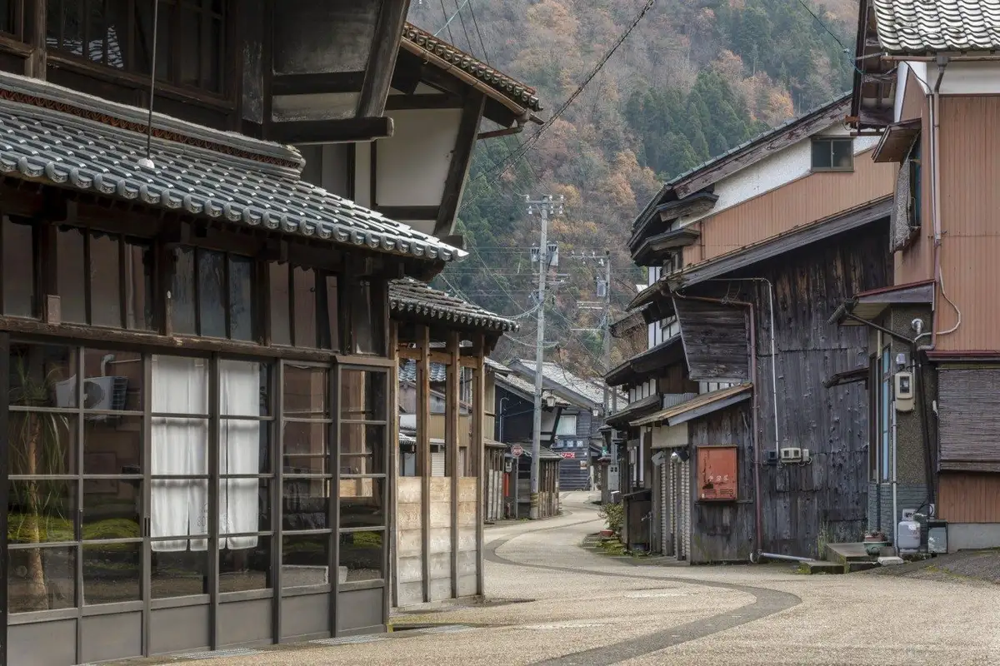
Stay
【一棟貸切古民家】sou's minka Luru
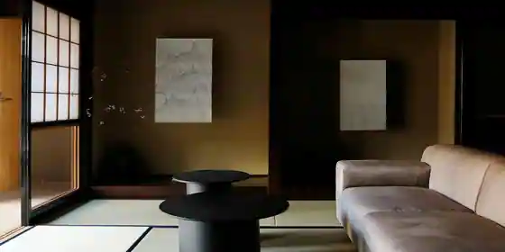
(Hitomune Kashikiri Ko Minka) sou's minka Luru
Inn in Imajo, Minamiechizen with a renovated traditional house.
花はす温泉 そまやま
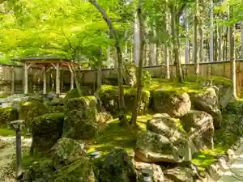
Hana Hasu Onsen Somayama
Inn at Hanahasu Onsen in Chushoya, Minamiechizen with open-air baths.
今庄の宿かねおり(旧ふれあい会館今庄サイクリングターミナル)
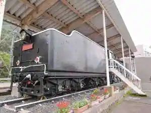
Imajo No Yado Kaneori (Kyu Fureai Kaikan Imajo Saikuringutaminaru)
Inn in Imajo, Minamiechizen; 8-minute walk from Imajo Station.
ｓｏｕ’ｓ ｍｉｎｋａ Ｌｕｒｕ
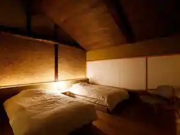
sou s minka Luru
Inn in Imajodai, Minamiechizen with a renovated traditional house.
ホテルはま屋
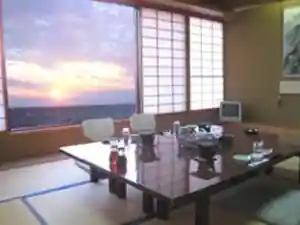
Hotel Hama Ya
Hotel in Nuka, Minamiechizen with local seafood dinners.
水仙
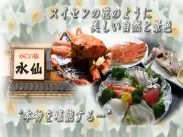
Suisen
Inn in Nuka, Minamiechizen with local seafood dinners.
Dining
ボルガ食堂
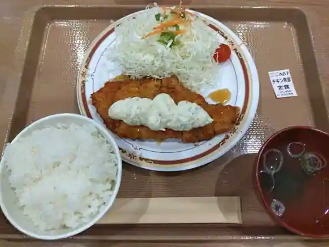
Boruga Shokudo
そば処 いまじょう
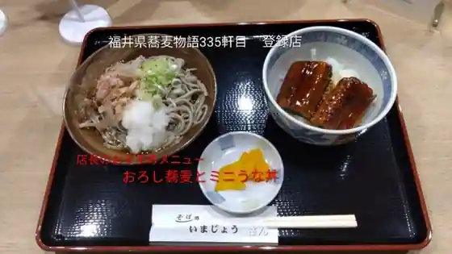
Soba Tokoro Imajo
いたどり
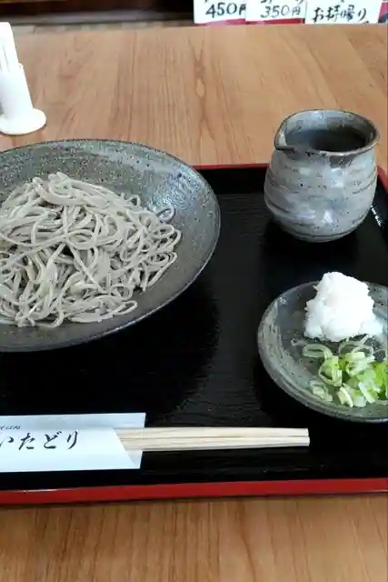
Itadori
六助
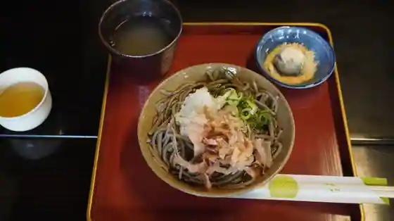
Rokusuke
おぼろや
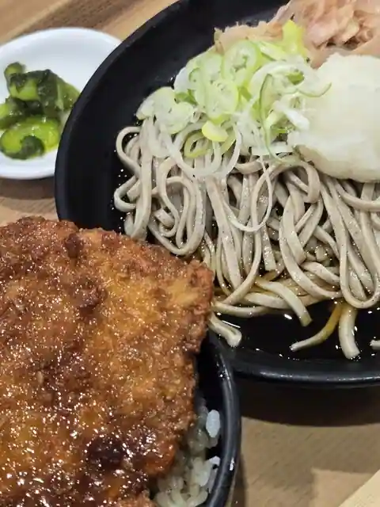
Oboroya
おばちゃんの店
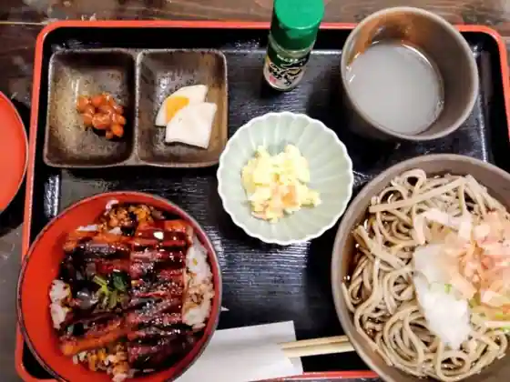
Obachanno
蕎麦 ふる里
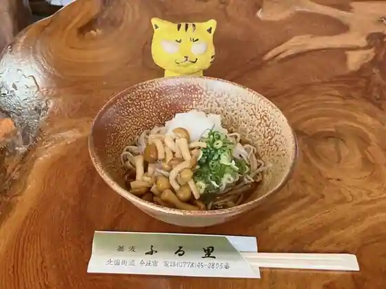
Soba Furu Sato
越前地磯亭
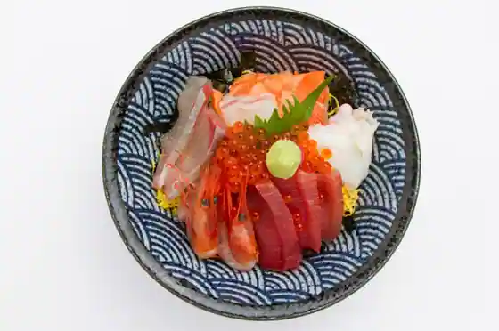
Echizen Jiso Tei
好好庵
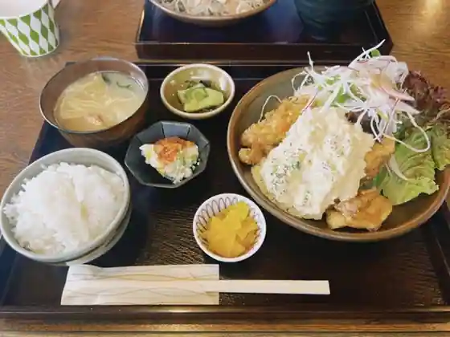
Koko Iori
ピッツェリア ロッソ
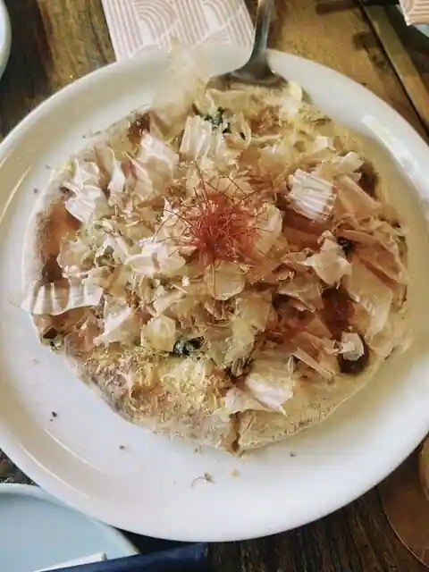
Pizzeria Rosso
甲楽城売店
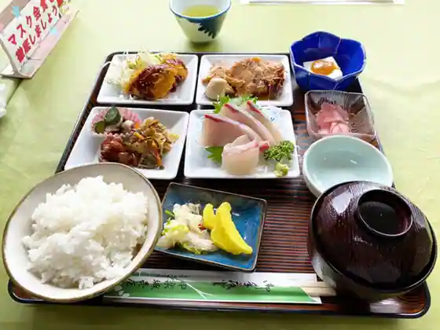
Koraki Bai
ゆたか水産
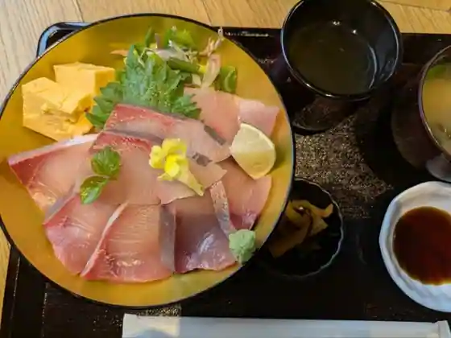
Yutaka Suisan
今庄食事処 うお座
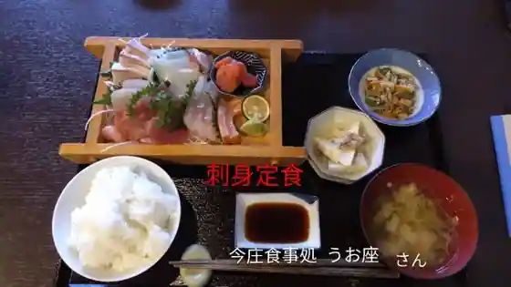
Imajo Shokuji Tokoro Uo Za
古民家レストラン らんたん
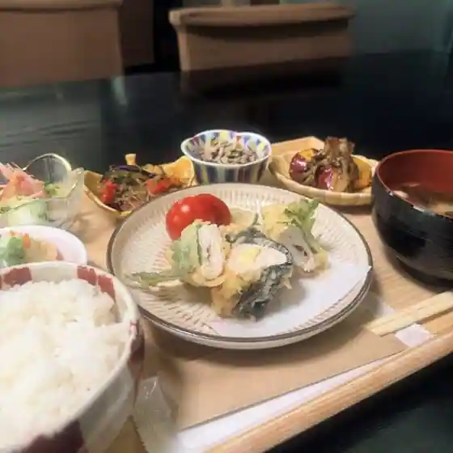
Ko Minka Restaurant Rantan
今庄そば道場
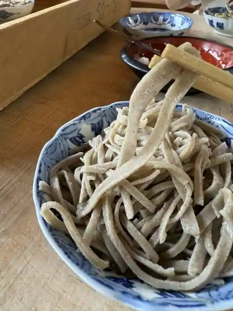
Imajo Soba Dojo
甘味処 てまり
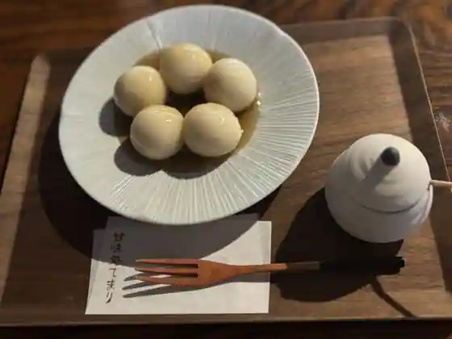
Amami Tokoro Temari
お食事処 ふわり
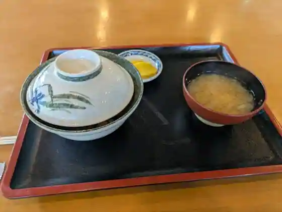
O Shokuji Tokoro Fuwari
道の駅 南えちぜん山海里
Michi No Eki Minami Echizen Sankai Sato
道の駅河野
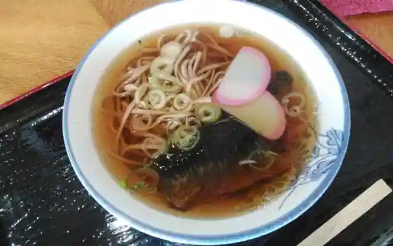
Michi No Eki Kono
網元の宿 あお来
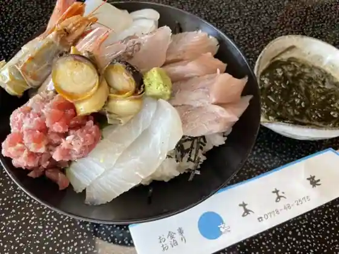
Amimoto No Yado Ao Rai
sou's coffee roastery
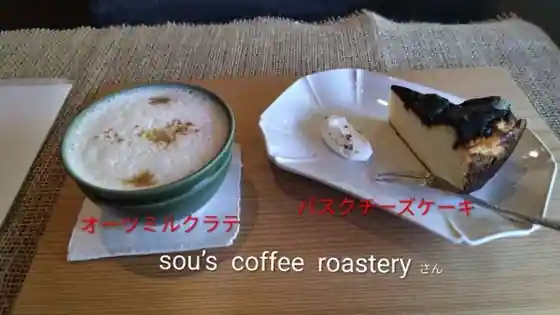
sou's coffee roastery
越前塩中華
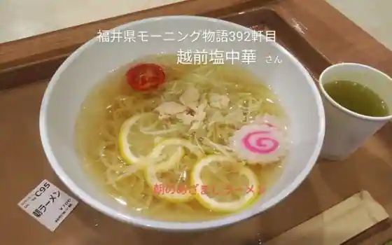
Echizen Shio Chuka
Sights
Kyu Hokurikusen Tonneru Gun
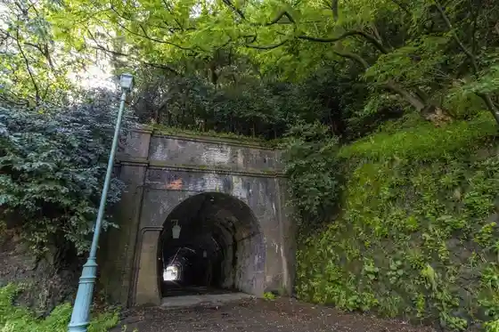
Roadside Station Minami Echizen Sankai Sato
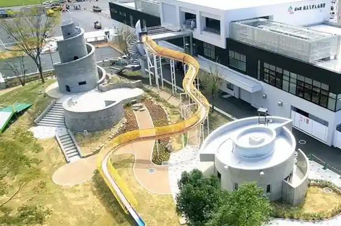
Roadside Station Kono
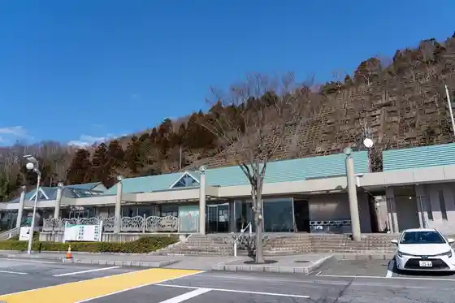
Imajo 365 Onsen Yasuragi
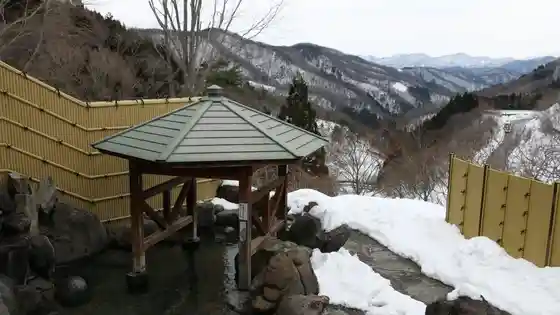
Yashagaike
Imajo Yado
Kitamae Funanushi no Kan Ukon Ie
Hachibuse Yama Campground (ASOBASE (Asobesu))
Hana Hasu Park
Itadori Yado
Kono Shiisaido Onsen Yubae
Sanchu Tonneru
Soba no Hana
Myo Yasushi Tera
Koraki Beach (Minamiechizen)
Imajo 365 Ski Area
Tokumukan Kanto Sonan Ireihi Park
Minamiechizen Culture Hall
Imajo no Yado Kaneori
Kono Beach (Minamiechizen)
Uota Land Nanjo
Nuka Beach (Minamiechizen)
Chiiki Marutto Taikan Yado Tama Village Ya
Kono Kitamae Funanushi Tori Gaido Tour
Fufu Iwa Bozu Iwa Kigan Nippon Retsu Shima
Ki no Me Toge
Furusato Koryu Center
Okunen Tera
Koya Dam
Reimbo Park Nanjo
Ito Shi Garden
Yuo Toge
Bashaku Kaido
Sanchu Toge
Somayama Castle Ruins
Sui Ke Castle Ruins (Hiuchi Castle Ruins)
Rekishi Bunka Fureai Hall
Fujikura Yama Nabekura Yama
Hakuryu no Taki Park
U Kan Shrine (Minamiechizen)
Kyoto Jingoro Ie
Kitaguni Kaido
Fureai Shiisaido Park
Showa Hall
Gen Na Jizo
Jigan Tera
Yasha Taki
Bushugaike (Minamiechizen)
Kono Campground Medaka no Gakko
Hana Hasu
Masuya Dam
Yashagaike no Autumn Leaves
Shita Hase no Cave
Hachibuse Yama
Fudogataki
Akatan Sabo Entei Gun
Ho no Ga Yama
Minamiechizen Town Hall